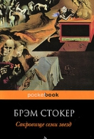

Название:Сокровище семи звезд
Автор:
Брэм Стокер
Описание: Брэм Стокер. Сокровище семи звёзд Посвящаю Элеоноре и Констанции Хойт Глава I НОЧНОЙ ЗОВ Происходящее казалось настолько реальным, что я не мог поверить, будто все это уже случилось. И все же события, сменявшие друг друга, были не новыми, незнакомыми, а вполне известными и даже ожидаемыми. Подобным образом с нами шутит память — к добру или злу, радости или боли, счастью или беде. Вот почему наша жизнь сладостно-горькая на вкус и то, что свершилось, переходит в разряд вечности. И

Название:Улица Теней, 77
Автор:
Дин Кунц
Описание: Дин Кунц. Улица Теней, 77 Отсюда, и в Страну Безумия Эду и Кэрол Горман, Оттуда, и в страну Сердца С бесконечной любовью После всех этих лет. О, темнота темнота темнота! Они все идут в темноту… Т. С. Элиот. «Ист-Коукер» Часть 1 Где собираются тени Как медленно крадется тень, но когда приходит срок, как быстро опускаются тени. Как быстро! Как быстро! Хилейр Беллок. «О солнечных часах» Глава 1 Северный лифт В тот четверг Эрл Блэндон, бывший американский сенатор,